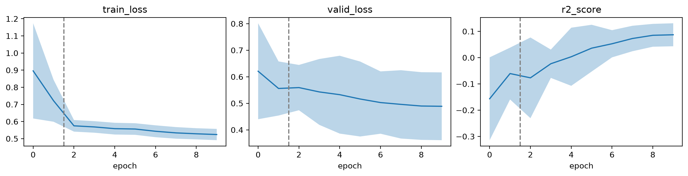

from fastcore.test import *
from fastai.callback.schedule import *
from soilspecdl.datasets import load_toy_kssl
from soilspecdl.models import SpectralCNN
from soilspecdl.transforms import BatchSNVLearner
fastai Learners for spectral models
A spectral model has two parts. The backbone turns each spectrum into a vector of features. The head maps those features to the prediction. SpectralCNN and its configurations, such as MirzaiCNN, follow this layout.
Fine-tuning a pretrained backbone treats the two parts differently. The head is new and trains first, while the backbone stays fixed. The backbone then adapts with a lower learning rate. fastai does both through parameter groups: Learner.freeze freezes every group except the last, and a slice of learning rates spreads them across the groups, lowest first. fastai’s default Learner puts all parameters in one group, so it can do neither.
spectral_splitter
def spectral_splitter(
m, # Model with `backbone` and `head` attributes
)->list: # Parameter groups: backbone, then headSplit a spectral model’s parameters into backbone and head groups
For the default SpectralCNN, the head holds the 257 parameters of Linear(256, 1). The backbone holds the rest:
model = SpectralCNN()
groups = spectral_splitter(model)
n_params = [sum(p.numel() for p in g) for g in groups]
test_eq(n_params[1], 257)
n_params[131600, 257]spectral_learner builds a Learner with spectral_splitter. Its defaults suit regression: mean squared error as the loss and R² as the metric. Pass loss_func and metrics for other tasks, such as classification.
spectral_learner
def spectral_learner(
dls, # DataLoaders, e.g. from `get_spectral_dls`
model, # Model with `backbone` and `head`, e.g. `SpectralCNN()`
loss_func:NoneType=None, # Loss function; `MSELossFlat()` if None
metrics:NoneType=None, # Metrics; `R2Score()` if None
splitter:function=spectral_splitter, # Function splitting the model's parameters into groups
*, opt_func:fastai.optimizer.Optimizer | fastai.optimizer.OptimWrapper=Adam, # Optimization function for training
lr:float | slice=0.001, # Default learning rate
cbs:fastai.callback.core.Callback | collections.abc.MutableSequence | None=None, # `Callback`s to add to `Learner`
path:str | pathlib.Path | None=None, # Parent directory to save, load, and export models. Defaults to `dls` `path`
model_dir:str | pathlib.Path='models', # Subdirectory to save and load models
wd:float | int | None=None, # Default weight decay
wd_bn_bias:bool=False, # Apply weight decay to normalization and bias parameters
train_bn:bool=True, # Train frozen normalization layers
moms:tuple=(0.95, 0.85, 0.95), # Default momentum for schedulers
default_cbs:bool=True, # Include default `Callback`s
)->fastai.learner.Learner:Learner for a spectral model, with backbone and head parameter groups
The examples train on the toy dataset from soilspecdl.datasets, predicting exchangeable potassium (Kex) from 500 KSSL MIR spectra:
toy = load_toy_kssl()
X, y, ids = toy.xy('k.ext_usda.a725_cmolc.kg')
dls, test_idx = get_spectral_dls(X, y.flatten(), toy.wavenumbers, batch_tfms=[BatchSNV()])The optimizer has one parameter group for the backbone and one for the head:
learn = spectral_learner(dls, SpectralCNN())
learn.create_opt()
test_eq(len(learn.opt.param_groups), 2)
len(learn.opt.param_groups)2freeze stops training of the backbone. Following fastai’s default train_bn=True, the backbone’s normalization layers still train, so the head and the BatchNorm weights are the only trainable parameters:
def n_trainable(m): return sum(p.numel() for p in m.parameters() if p.requires_grad)
learn.freeze()
test_eq(n_trainable(learn.model.head), 257)
n_trainable(learn.model.backbone), n_trainable(learn.model.head)(992, 257)Train the head first, with the backbone frozen. One epoch at each stage shows the steps, not a trained model:
learn.fit_one_cycle(1, lr_max=1e-3)█
epoch train_loss valid_loss r2_score time
█
Epoch 1/1 : |----------------------------------------| 0.00% [0/12 00:00<?]
Epoch 1/1 : |███-------------------------------------| 8.33% [1/12 00:00<00:01]
Epoch 1/1 : |██████----------------------------------| 16.67% [2/12 00:00<00:00... 0.7037]
Epoch 1/1 : |██████████------------------------------| 25.00% [3/12 00:00<00:00... 0.8024]
Epoch 1/1 : |█████████████---------------------------| 33.33% [4/12 00:00<00:00... 0.7921]
Epoch 1/1 : |████████████████------------------------| 41.67% [5/12 00:00<00:00... 0.7174]
Epoch 1/1 : |█████████████████████████████████-------| 83.33% [10/12 00:00<00:00... 0.7638]
Epoch 1/1 : |████████████████████████████████████████| 100.00% [12/12 00:00<00:00... 0.7745]
Epoch 1/1 :
Epoch 1/1 :
█
Epoch 1/1 : |----------------------------------------| 0.00% [0/2 00:00<?]
Epoch 1/1 : |████████████████████--------------------| 50.00% [1/2 00:00<00:00]
Epoch 1/1 : |████████████████████████████████████████| 100.00% [2/2 00:00<00:00... 0.7363]
Epoch 1/1 :
Epoch 1/1 :
0 0.736343 0.248580 -0.012090 00:00 Then unfreeze, and train the whole model with a slice of learning rates. The backbone gets the lower rate and the head the higher one:
learn.unfreeze()
learn.opt.set_hyper('lr', slice(1e-5, 1e-3))
lrs = [h['lr'] for h in learn.opt.hypers]
test_close(lrs, [1e-5, 1e-3])
lrs[1e-05, 0.001]learn.fit_one_cycle(1, lr_max=slice(1e-5, 1e-3))█
epoch train_loss valid_loss r2_score time
█
Epoch 1/1 : |----------------------------------------| 0.00% [0/12 00:00<?]
Epoch 1/1 : |███-------------------------------------| 8.33% [1/12 00:00<00:00]
Epoch 1/1 : |██████----------------------------------| 16.67% [2/12 00:00<00:00... 0.4646]
Epoch 1/1 : |██████████------------------------------| 25.00% [3/12 00:00<00:00... 0.6536]
Epoch 1/1 : |█████████████---------------------------| 33.33% [4/12 00:00<00:00... 0.5480]
Epoch 1/1 : |████████████████------------------------| 41.67% [5/12 00:00<00:00... 0.5559]
Epoch 1/1 : |████████████████████████████████████████| 100.00% [12/12 00:00<00:00... 0.5573]
Epoch 1/1 :
Epoch 1/1 :
█
Epoch 1/1 : |----------------------------------------| 0.00% [0/2 00:00<?]
Epoch 1/1 : |████████████████████--------------------| 50.00% [1/2 00:00<00:00]
Epoch 1/1 : |████████████████████████████████████████| 100.00% [2/2 00:00<00:00... 0.6249]
Epoch 1/1 :
Epoch 1/1 :
0 0.624940 0.249138 -0.014361 00:00 Cross-validation
Cross-validation chooses a training schedule, such as the number of epochs, without touching the test set. cross_validate trains one model per fold from get_kfold_splitters, and returns each fold’s losses and metrics after every epoch.
fastai’s Recorder keeps the values of the latest fit call only. A fine-tuning schedule makes two calls: one with the backbone frozen, one after unfreezing. _EpochLog records every epoch across all calls:
cross_validate
def cross_validate(
X, # Spectral data matrix
y, # Target values
wns, # Wavenumbers
model_fn, # Function returning a fresh model, called once per fold
fit, # Function training a fold's `Learner`
n_splits:int=5, # Number of folds
seed:int=42, # Random seed for the fold shuffle
bs:int=32, # Batch size
batch_tfms:NoneType=None, # Batch transforms, e.g. [BatchSNV()]
*, loss_func:NoneType=None, # Loss function; `MSELossFlat()` if None
metrics:NoneType=None, # Metrics; `R2Score()` if None
splitter:function=spectral_splitter, # Function splitting the model's parameters into groups
opt_func:fastai.optimizer.Optimizer | fastai.optimizer.OptimWrapper=Adam, # Optimization function for training
lr:float | slice=0.001, # Default learning rate
cbs:fastai.callback.core.Callback | collections.abc.MutableSequence | None=None, # `Callback`s to add to `Learner`
path:str | pathlib.Path | None=None, # Parent directory to save, load, and export models. Defaults to `dls` `path`
model_dir:str | pathlib.Path='models', # Subdirectory to save and load models
wd:float | int | None=None, # Default weight decay
wd_bn_bias:bool=False, # Apply weight decay to normalization and bias parameters
train_bn:bool=True, # Train frozen normalization layers
moms:tuple=(0.95, 0.85, 0.95), # Default momentum for schedulers
default_cbs:bool=True, # Include default `Callback`s
)->pandas.DataFrame: # One row per fold and epochTrain one model per fold with fit, returning each fold’s losses and metrics after every epoch
model_fn builds a new model for each fold, so no fold starts from weights trained in another. For fine-tuning, model_fn loads the pretrained backbone. fit holds the whole schedule. This one trains the head for 2 epochs with the backbone frozen, then the whole model for 8 epochs. no_bar and no_logging hide fastai’s progress tables, one per fit call and fold:
def fit(learn):
with learn.no_bar(), learn.no_logging():
learn.freeze()
learn.fit_one_cycle(2, lr_max=1e-3)
learn.unfreeze()
learn.fit_one_cycle(8, lr_max=slice(1e-5, 1e-3))
res = cross_validate(X, y.flatten(), toy.wavenumbers, model_fn=SpectralCNN, fit=fit, batch_tfms=[BatchSNV()])
test_eq(len(res), 5 * 10)
test_eq(res.groupby('stage')['epoch'].unique().map(list).tolist(), [[0, 1], list(range(2, 10))])
res.head()| fold | epoch | stage | train_loss | valid_loss | r2_score | |
|---|---|---|---|---|---|---|
| 0 | 0 | 0 | 0 | 1.336636 | 0.741747 | -0.398279 |
| 1 | 0 | 1 | 0 | 0.907791 | 0.525061 | 0.010198 |
| 2 | 0 | 2 | 1 | 0.572493 | 0.522077 | 0.015823 |
| 3 | 0 | 3 | 1 | 0.546921 | 0.522926 | 0.014224 |
| 4 | 0 | 4 | 1 | 0.536715 | 0.488587 | 0.078957 |
Epochs are numbered across both fit calls, and stage is the index of the call. Stage 0 holds epochs 0 and 1, with the backbone frozen. Stage 1 holds epochs 2 to 9. Averaging over folds gives one validation curve. Its best epoch sets the schedule for the final model, trained on all the samples. Ten epochs from random weights reach a mean R² of about 0.1 here, so these values show the steps, not a trained model:
res.groupby('epoch')['r2_score'].agg(['mean', 'std'])| mean | std | |
|---|---|---|
| epoch | ||
| 0 | -0.156680 | 0.157696 |
| 1 | -0.060754 | 0.098638 |
| 2 | -0.077009 | 0.153572 |
| 3 | -0.023327 | 0.053943 |
| 4 | 0.003221 | 0.110636 |
| 5 | 0.035951 | 0.089084 |
| 6 | 0.052695 | 0.051765 |
| 7 | 0.072717 | 0.048490 |
| 8 | 0.084906 | 0.043491 |
| 9 | 0.086939 | 0.043784 |
plot_cv draws the same summary for several columns at once, one panel each. A line shows the mean over folds, and a band shows ±1 standard deviation. A dashed line marks where each stage after the first begins. A training loss that keeps falling while the validation loss rises shows overfitting.
plot_cv
def plot_cv(
res, # DataFrame from `cross_validate`
cols:tuple=('train_loss', 'valid_loss', 'r2_score'), # Columns to plot, one panel each
axs:NoneType=None, # One matplotlib Axes per column; a new figure if None
):Plot the mean over folds of each column in cols against epoch, with a band of ±1 standard deviation
plot_cv(res);